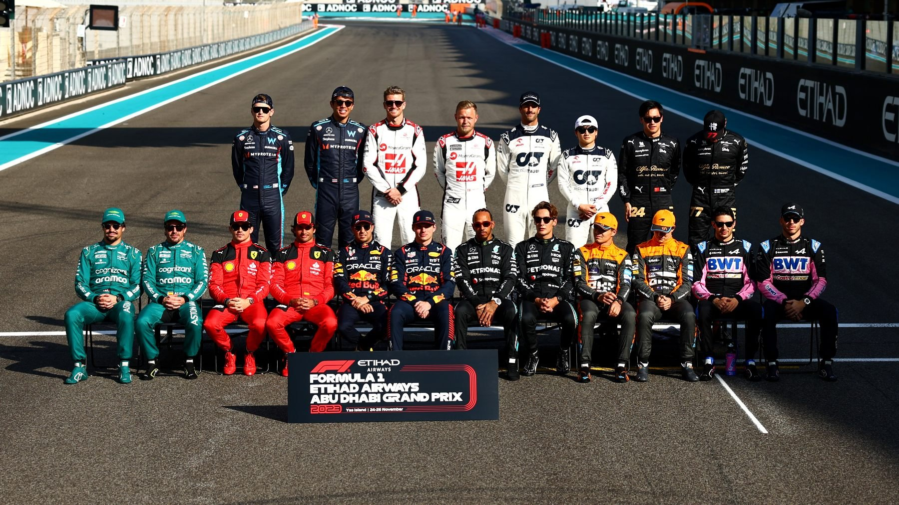
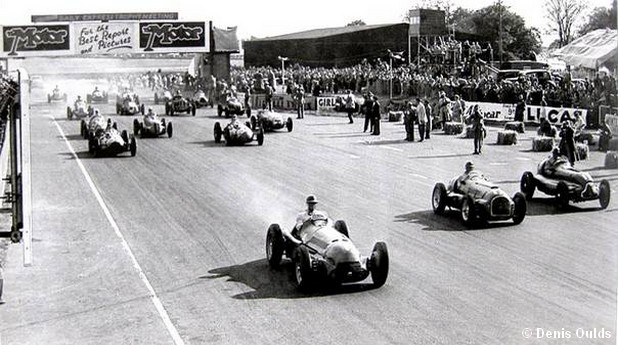
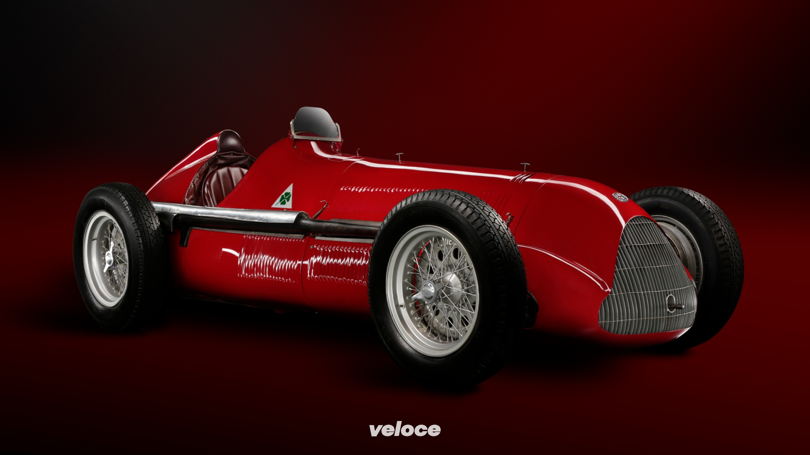
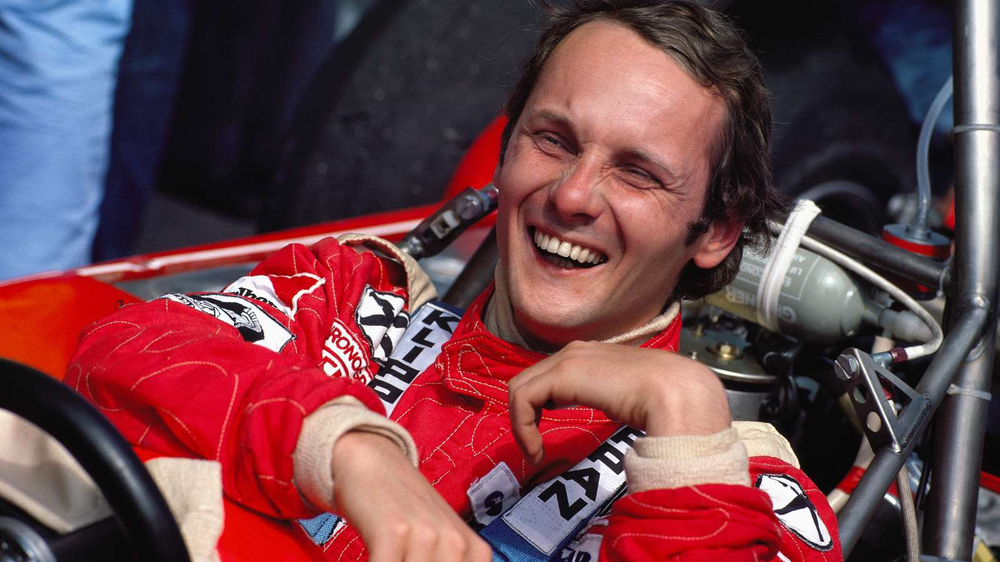
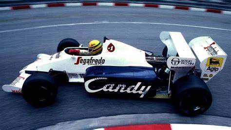
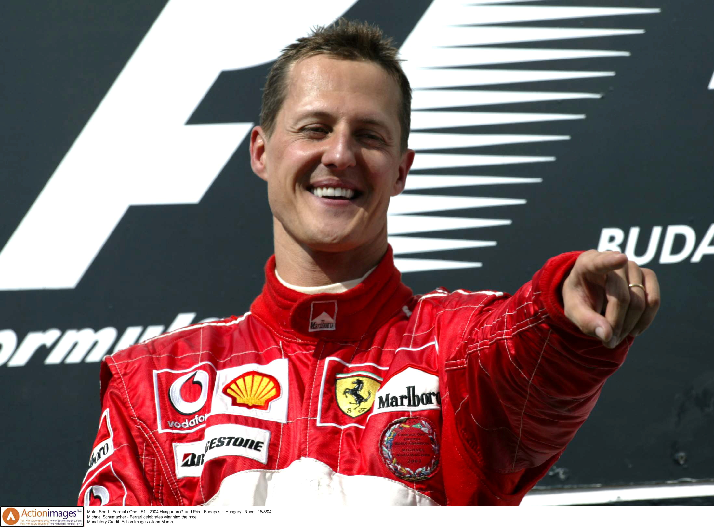
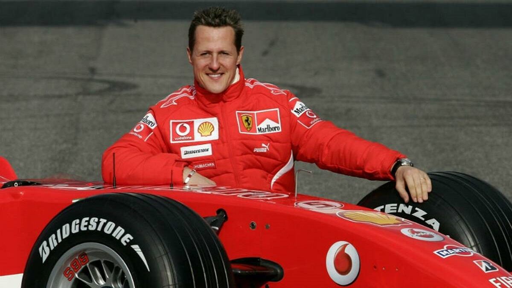

<!DOCTYPE html>
<html lang="pt-br">

<head>
    <meta charset="UTF-8">
    <meta name="viewport" content="width=device-width, initial-scale=1.0">
    <title>Bem-vindo à História da F1</title>
    <link rel="stylesheet" href="estilos.css">
</head>

<body>

</body>

</html>

<header>
    <a href="index.html">
        <h1>Fórmula 1: Passado e Presente</h1>
    </a>
    <nav>
        <ul>
            <li><a href="#" data-page="1">A Criação da F1</a></li>
            <li><a href="#" data-page="2">Os Primeiros Carros</a></li>
            <li><a href="#" data-page="3">As Pistas Iniciais</a></li>
            <li><a href="#" data-page="4">Os Anos 70</a></li>
            <li><a href="#" data-page="5">Os Anos 80</a></li>
            <li><a href="#" data-page="6">Os Anos 90</a></li>
            <li><a href="#" data-page="7">Os Anos 2000</a></li>
            <li><a href="#" data-page="8">Fórmula 1 Hoje</a></li>
        </ul>
    </nav>
</header>

<main>
    <div id="page0" class="page active">
       <h1>Bem-vindo à Emoção da Fórmula 1!</h1> 
       
       <p>Prepare-se para acelerar rumo ao mundo da velocidade! Seja você um fã dedicado, um entusiasta de automobilismo ou alguém que sonha em pilotar um carro de F1, este é o seu ponto de partida. Explore curiosidades, mergulhe na história e descubra o que torna esse esporte tão eletrizante. Aperte os cintos e embarque nessa jornada!</p> 
    </div>
    <div id="page1" class="page">
        <h2>A Criação da Fórmula 1</h2>
        

        <p>A Fórmula 1 foi oficialmente criada em <strong>1950</strong>, mas suas raízes remontam às primeiras corridas
            de automóveis do final do século XIX. Após a Segunda Guerra Mundial, o automobilismo precisava de uma
            estrutura mais organizada, e a <strong>FIA (Federação Internacional do Automóvel)</strong> decidiu criar um
            campeonato mundial de corridas.</p>

        <h3>O Primeiro Campeonato Mundial</h3>
        <p>O primeiro campeonato oficial da Fórmula 1 começou em <strong>1950</strong>, com sete corridas realizadas em
            circuitos europeus. O Grande Prêmio inaugural aconteceu no <strong>circuito de Silverstone, na Inglaterra,
                em 13 de maio de 1950</strong>. O vencedor foi o piloto italiano <strong>Giuseppe Farina</strong>,
            pilotando um <strong>Alfa Romeo 158</strong>.</p>

        <h3>Por que "Fórmula 1"?</h3>
        <p>O nome "Fórmula 1" vem das regras padronizadas (ou "fórmula") criadas para regular as corridas. O "1"
            representa a categoria mais alta do automobilismo mundial, reunindo os carros mais rápidos e os melhores
            pilotos da época.</p>

        <h3>Os Primeiros Anos da F1</h3>
        <ul>
            <li><strong>1950</strong> – Primeiro Campeonato Mundial, vencido por <strong>Giuseppe Farina</strong>.</li>
            <li><strong>1951</strong> – Juan Manuel Fangio conquista seu primeiro título, iniciando uma era de domínio.
            </li>
            <li><strong>1952-1953</strong> – Ferrari domina a categoria com Alberto Ascari.</li>
            <li><strong>1954-1955</strong> – A Mercedes entra na F1 e vence com Fangio.</li>
        </ul>

        <h3>Resumo da Criação da F1</h3>
        <p>A Fórmula 1 surgiu oficialmente em <strong>1950</strong>, organizada pela <strong>FIA</strong> para criar um
            campeonato mundial de automobilismo. Seu primeiro campeão foi <strong>Giuseppe Farina</strong>, mas
            <strong>Juan Manuel Fangio</strong> logo se tornou a primeira lenda da categoria. O nome "Fórmula 1" vem das
            regras padronizadas para os carros. A partir desse momento, a F1 se consolidou como o auge do automobilismo,
            evoluindo constantemente até os dias de hoje.</p>
    </div>

    <div id="page2" class="page">
        <h2>Os Primeiros Carros da Fórmula 1</h2>
        

        <p>Os primeiros carros da Fórmula 1 eram versões modificadas dos modelos usados em Grandes Prêmios antes da
            Segunda Guerra Mundial. Eram máquinas rudimentares, sem aerodinâmica refinada e com poucos recursos de
            segurança, mas extremamente potentes para a época.</p>

        <h3>O Primeiro GP da História (1950)</h3>
        <p>O primeiro Grande Prêmio da Fórmula 1 foi realizado em <strong>Silverstone, no dia 13 de maio de
                1950</strong>. A corrida foi vencida por <strong>Giuseppe Farina</strong> com o carro <strong>Alfa Romeo
                158 "Alfetta"</strong>, um dos primeiros ícones da F1.</p>

        <h3>Principais Características dos Carros dos Anos 50</h3>
        <ul>
            <li><strong>Chassis</strong>: Tubulares de alumínio ou aço, sem estruturas de absorção de impacto.</li>
            <li><strong>Motor</strong>: Em sua maioria, motores <strong>1.5L supercharged</strong> ou <strong>4.5L
                    aspirados</strong>.</li>
            <li><strong>Pneus</strong>: Finos e de perfil alto, sem compostos sofisticados.</li>
            <li><strong>Segurança</strong>: Praticamente inexistente – sem cintos de segurança, cockpits abertos e sem
                proteção lateral.</li>
        </ul>

        <h3>Carros Icônicos da Primeira Década</h3>
        <ul>
            <li><strong>Alfa Romeo 158/159</strong> – Dominou os primeiros anos da F1 (1950-1951).</li>
            <li><strong>Ferrari 500</strong> – Modelo que deu à Ferrari seus primeiros títulos mundiais (1952-1953).
            </li>
            <li><strong>Mercedes W196</strong> – Revolucionário, trouxe injeção direta de combustível e aerodinâmica
                refinada (1954-1955).</li>
            <li><strong>Maserati 250F</strong> – Famoso por sua dirigibilidade e pelo título de Juan Manuel Fangio em
                1957.</li>
        </ul>

        <h3>Resumo da Era Inicial</h3>
        <p>Os primeiros carros de Fórmula 1 eram brutais, perigosos e extremamente desafiadores de pilotar. A competição
            era dominada por <strong>Alfa Romeo, Ferrari, Mercedes e Maserati</strong>, com pilotos lendários como
            <strong>Juan Manuel Fangio</strong> e <strong>Alberto Ascari</strong>. Foi uma era de pura velocidade e
            coragem, sem as preocupações com segurança e tecnologia que moldariam as décadas seguintes.</p>
    </div>


    <div id="page3" class="page">
        <h2>As Pistas Iniciais da Fórmula 1</h2>
        

        <p>Quando a Fórmula 1 foi criada em 1950, as corridas aconteciam em circuitos que eram, em sua maioria, pistas
            adaptadas ou estradas abertas ao público. A segurança era mínima, e os traçados desafiavam os pilotos com
            curvas perigosas e superfícies irregulares.</p>

        <h3>O Primeiro Grande Prêmio da História</h3>
        <p>A primeira corrida oficial da Fórmula 1 aconteceu em <strong>Silverstone</strong>, na Inglaterra, no dia
            <strong>13 de maio de 1950</strong>. O circuito, que originalmente era uma base aérea da Segunda Guerra
            Mundial, foi adaptado para receber a competição.</p>

        <h3>Pistas Mais Icônicas dos Primeiros Anos</h3>
        <ul>
            <li><strong>Silverstone (Reino Unido)</strong> – Sede do primeiro GP da história, com retas longas e curvas
                de alta velocidade.</li>
            <li><strong>Monza (Itália)</strong> – Um dos templos da velocidade, com traçado rápido e inclinação
                acentuada no antigo anel peraltado.</li>
            <li><strong>Indianápolis (EUA)</strong> – Parte do calendário inicial, mas muito diferente das outras
                pistas, sendo um circuito oval.</li>
            <li><strong>Nürburgring Nordschleife (Alemanha)</strong> – Conhecido como "Inferno Verde", um dos traçados
                mais perigosos já usados na F1.</li>
            <li><strong>Reims-Gueux (França)</strong> – Um circuito de estrada que desafiava pilotos com retas longas e
                curvas traiçoeiras.</li>
            <li><strong>Rouen-Les-Essarts (França)</strong> – Uma pista extremamente técnica e perigosa, com grandes
                variações de altitude.</li>
            <li><strong>Zandvoort (Holanda)</strong> – Circuito rápido e sinuoso localizado entre dunas de areia, que
                exigia precisão dos pilotos.</li>
        </ul>

        <h3>Os Desafios das Pistas Antigas</h3>
        <p>Os circuitos das primeiras décadas eram extremamente perigosos. Não havia áreas de escape adequadas, e muitas
            corridas aconteciam em estradas públicas, cercadas por árvores, postes e até casas. Qualquer erro poderia
            ser fatal, e os pilotos corriam com coragem extrema.</p>

        <h3>Resumo das Pistas Iniciais</h3>
        <p>Nos primeiros anos da Fórmula 1, os circuitos eram uma verdadeira prova de bravura para os pilotos. Com
            traçados velozes e perigosos, pistas como <strong>Monza, Nürburgring e Silverstone</strong> marcaram a
            história do automobilismo. A segurança era mínima, e a emoção estava sempre presente, tornando essa era um
            dos períodos mais icônicos da F1.</p>
    </div>


    <div id="page4" class="page">
        <h2>Os Anos 70 e Emerson Fittipaldi</h2>
        
        <p>Os anos 70 foram uma época de intensa transformação no cenário mundial...</p>
        <p><mark>para quem não quer ler, aqui temos o resumo</mark> Os anos 70 foram uma década de grandes mudanças...
        </p>
    </div>

    <div id="page5" class="page">
        <h2>Os Anos 80</h2>
        
        <p>Avanços tecnológicos e o surgimento de Ayrton Senna marcaram essa época...</p>
    </div>

    <div id="page6" class="page">
        <h2>Os Anos 90</h2>
        
        <p>Os anos 90 foram uma década de grandes mudanças e amadurecimento na Fórmula 1. Foi um período marcado pelo
            <strong>avanço da tecnologia</strong>, <strong>maior segurança nas pistas</strong> e a ascensão de
            <strong>Michael Schumacher</strong>, que dominaria os anos seguintes. A tragédia de <strong>Ayrton
                Senna</strong> em 1994 foi um dos momentos mais marcantes da F1 e trouxe mudanças significativas para o
            esporte.</p>

        <h3>Mudanças nas Pistas e Segurança</h3>
        <p>Nos anos 90, a segurança se tornou prioridade após os acidentes fatais de <strong>Ayrton Senna</strong> e
            <strong>Roland Ratzenberger</strong> em Ímola (1994). A FIA implementou várias mudanças, incluindo:</p>
        <ul>
            <li><strong>Maior número de áreas de escape</strong> para reduzir os impactos de acidentes.</li>
            <li><strong>Modificação em circuitos clássicos</strong> como Ímola, Barcelona e Spa-Francorchamps para
                reduzir a velocidade em certos trechos perigosos.</li>
            <li><strong>Uso de chicanes</strong> para diminuir a velocidade em curvas de alta periculosidade.</li>
            <li><strong>Reforço nos cockpits</strong> e aumento da altura do banco dos pilotos para mais proteção.</li>
        </ul>

        <h3>Principais Circuitos dos Anos 90</h3>
        <ul>
            <li><strong>Ímola (San Marino, Itália)</strong> – Palco da tragédia de Senna em 1994, passou por mudanças
                drásticas na segurança.</li>
            <li><strong>Suzuka (Japão)</strong> – Um dos circuitos mais técnicos, onde grandes títulos foram decididos.
            </li>
            <li><strong>Spa-Francorchamps (Bélgica)</strong> – Seguiu sendo um dos traçados mais desafiadores, com a
                lendária curva <em>Eau Rouge</em>.</li>
            <li><strong>Silverstone (Reino Unido)</strong> – Foi remodelado para aumentar a segurança, tornando-se um
                circuito mais técnico.</li>
            <li><strong>Mônaco</strong> – Continuou como a joia do calendário, onde habilidade e precisão eram mais
                importantes que potência.</li>
        </ul>

        <h3>Evolução dos Carros e Tecnologia</h3>
        <ul>
            <li><strong>Fim dos motores turbo</strong>: A FIA baniu os turbos no final dos anos 80, e os anos 90 foram
                dominados pelos motores <strong>V10 e V12</strong>.</li>
            <li><strong>Eletrônica e Assistência ao Piloto</strong>: Controle de tração, suspensão ativa e câmbio
                semi-automático foram introduzidos e depois limitados em 1994.</li>
            <li><strong>Aerodinâmica refinada</strong>: Equipes exploraram asas mais eficientes e difusores para maior
                downforce sem comprometer a velocidade.</li>
        </ul>

        <h3>Grandes Pilotos e Rivalidades</h3>
        <ul>
            <li><strong>Ayrton Senna vs. Alain Prost</strong> – Rivalidade ainda quente no início da década, até a
                aposentadoria de Prost.</li>
            <li><strong>Michael Schumacher vs. Damon Hill</strong> – Schumacher emergiu como o novo grande nome da F1,
                conquistando seus primeiros títulos em 1994 e 1995.</li>
            <li><strong>Mika Häkkinen vs. Michael Schumacher</strong> – No fim da década, Mika Häkkinen e a McLaren
                desafiaram Schumacher.</li>
        </ul>

        <h3>Resumo da Década</h3>
        <p>Os anos 90 foram um <strong>período de transição</strong> na F1, combinando a ousadia dos anos 80 com o
            avanço tecnológico e a segurança que moldariam o futuro do esporte. A morte de Senna <strong>mudou a forma
                como a segurança era tratada</strong>, e a tecnologia começou a transformar os carros. Foi a década onde
            <strong>Michael Schumacher começou a se tornar uma lenda</strong>, abrindo caminho para o domínio da Ferrari
            nos anos 2000.</p>
    </div>


    <div id="page7" class="page">
        <h2>Os Anos 2000</h2>
        
        <p>A década de 2000 foi marcada pelo domínio absoluto de <strong>Michael Schumacher</strong> e da
            <strong>Ferrari</strong>, mudanças significativas nos regulamentos e o surgimento de novas estrelas. Foi um
            período de <strong>grande evolução tecnológica</strong> e de fortalecimento da segurança na F1.</p>

        <h3>Domínio da Ferrari e Schumacher</h3>
        <p>Schumacher venceu <strong>cinco títulos consecutivos</strong> entre <strong>2000 e 2004</strong>, quebrando
            recordes e tornando-se o maior campeão da época.</p>
        <ul>
            <li><strong>Ferrari e Ross Brawn</strong> criaram uma das parcerias mais bem-sucedidas da história da F1.
            </li>
            <li><strong>F2002 e F2004</strong> foram carros revolucionários, extremamente rápidos e confiáveis.</li>
            <li>Schumacher quebrou recordes de vitórias, poles e títulos, tornando-se uma lenda viva do automobilismo.
            </li>
        </ul>

        <h3>Regulamentos e Mudanças Técnicas</h3>
        <p>A FIA implementou diversas mudanças para reduzir custos e tornar a competição mais equilibrada:</p>
        <ul>
            <li><strong>Fim dos motores V10</strong> no final da década, substituídos pelos V8.</li>
            <li><strong>Proibição dos pit stops para reabastecimento</strong> (em 2010, mas já planejado no fim da
                década).</li>
            <li><strong>Novas regras aerodinâmicas</strong> para reduzir o efeito da turbulência e incentivar
                ultrapassagens.</li>
        </ul>

        <h3>Grandes Rivalidades</h3>
        <ul>
            <li><strong>Schumacher vs. Räikkönen</strong> – O finlandês da McLaren desafiou Schumacher, mas enfrentou
                problemas de confiabilidade.</li>
            <li><strong>Fernando Alonso vs. Schumacher</strong> – O espanhol da Renault encerrou a era Schumacher ao
                vencer os títulos de 2005 e 2006.</li>
            <li><strong>Hamilton vs. Massa</strong> – Em 2008, Felipe Massa quase levou o título, mas perdeu para Lewis
                Hamilton na última curva do GP do Brasil.</li>
        </ul>

        <h3>Pistas Marcantes da Década</h3>
        <ul>
            <li><strong>Indianápolis</strong> – A F1 correu nos EUA, mas o GP de 2005 ficou marcado pelo escândalo dos
                pneus Michelin.</li>
            <li><strong>Sepang (Malásia)</strong> – Um dos circuitos mais modernos introduzidos nos anos 2000.</li>
            <li><strong>Bahrein e Xangai</strong> – Novas adições ao calendário, refletindo a globalização da F1.</li>
            <li><strong>Interlagos</strong> – Cenário de finais emocionantes, como os títulos de 2007 (Räikkönen) e 2008
                (Hamilton).</li>
        </ul>

        <h3>Resumo da Década</h3>
        <p>Os anos 2000 foram dominados pela Ferrari e Schumacher no início, mas viram a ascensão de novos campeões como
            <strong>Fernando Alonso, Kimi Räikkönen e Lewis Hamilton</strong>. A FIA implementou mudanças significativas
            para equilibrar a competição e tornar o esporte mais sustentável. O final da década marcou a transição para
            uma <strong>nova era</strong> da Fórmula 1, com maior foco na tecnologia e na segurança.</p>
    </div>

    <div id="page8" class="page">
        <h1>Fórmula 1 Hoje</h1>
        <p><strong>Data:</strong> 15 de março de 2025</p>
        <p><strong>Grande Prêmio:</strong> Austrália</p>
        <p><strong>Local:</strong> Circuito de Melbourne</p>
        <p><strong>Corridas Sprint em 2025:</strong> China, Miami, Austin, Brasil, Bélgica e Catar.</p>

        <h2>Equipes e Pilotos da Temporada 2025</h2>
        <table>
            <tr>
                <th>Equipe</th>
                <th>Pilotos</th>
                <th>Site Oficial</th>
            </tr>
            <tr>
                <td>McLaren</td>
                <td>Lando Norris, Oscar Piastri</td>
                <td><a href="https://www.mclaren.com/racing/" target="_blank">Visitar</a></td>
            </tr>
            <tr>
                <td>Ferrari</td>
                <td>Charles Leclerc, Lewis Hamilton</td>
                <td><a href="https://www.ferrari.com/" target="_blank">Visitar</a></td>
            </tr>
            <tr>
                <td>Red Bull Racing</td>
                <td>Max Verstappen, Liam Lawson</td>
                <td><a href="https://www.redbullracing.com/" target="_blank">Visitar</a></td>
            </tr>
            <tr>
                <td>Mercedes</td>
                <td>George Russell, Andrea Kimi Antonelli</td>
                <td><a href="https://www.mercedesamgf1.com/" target="_blank">Visitar</a></td>
            </tr>
            <tr>
                <td>Aston Martin</td>
                <td>Lance Stroll, Fernando Alonso</td>
                <td><a href="https://www.astonmartinf1.com/" target="_blank">Visitar</a></td>
            </tr>
            <tr>
                <td>Alpine</td>
                <td>Pierre Gasly, Jack Doohan</td>
                <td><a href="https://www.alpinecars.com/en/" target="_blank">Visitar</a></td>
            </tr>
            <tr>
                <td>Haas</td>
                <td>Esteban Ocon, Oliver Bearman</td>
                <td><a href="https://www.haasf1team.com/" target="_blank">Visitar</a></td>
            </tr>
            <tr>
                <td>Racing Bulls</td>
                <td>Isack Hadjar, Yuki Tsunoda</td>
                <td><a href="https://www.racingbulls.com/" target="_blank">Visitar</a></td>
            </tr>
            <tr>
                <td>Williams</td>
                <td>Alexander Albon, Carlos Sainz Jr.</td>
                <td><a href="https://www.williamsf1.com/" target="_blank">Visitar</a></td>
            </tr>
            <tr>
                <td>Sauber</td>
                <td>Nico Hülkenberg, Gabriel Bortoleto</td>
                <td><a href="https://www.sauber-group.com/motorsport/formula-1/" target="_blank">Visitar</a></td>
            </tr>
        </table>

        <h2>Mais informações</h2>
        <p>Para mais detalhes sobre o calendário completo da temporada, visite o site oficial da Fórmula 1:</p>
        <p><a href="https://www.formula1.com/en/racing/2025" target="_blank">Site Oficial da Fórmula 1</a></p>
    </div>

</main>
<script src="Formula1.js"></script>
</body>

</html>